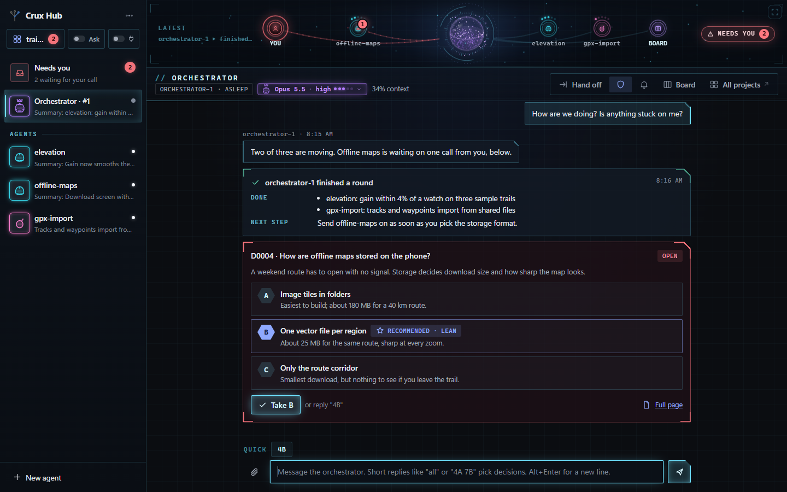
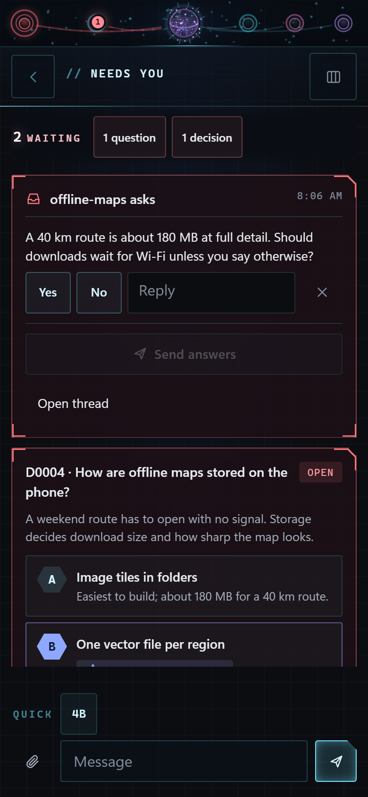

It stops and asks, with pictures
Before Claude quietly picks your data model, method or layout, Crux lays out the options with sketches, pros and cons, and a recommendation. Nothing is built until you pick.
A decision skill and an agent hub for Claude Code
Claude does the work around the decision. You make the call.
Crux stops Claude at the handful of choices that matter, shows you the options as pictures, and keeps a record every later session reads. Crux Hub is a chat app on your own computer for directing several Claude agents at once, from your desk or your phone.
Free and open source. Runs on your own machine.


What's different
Before Claude quietly picks your data model, method or layout, Crux lays out the options with sketches, pros and cons, and a recommendation. Nothing is built until you pick.
Each pick is saved as a short record in your project. Every later session reads it before planning, so a settled question stays settled.
The Hub gives you one chat with an orchestrator and its workers, and gathers everything waiting on you into a single list. It works on your phone too.
Crux, the decision skill
Type /crux before a piece of work, or let it step in on its own when Claude is about to make a big choice for you. It finds the few decisions hiding in the task and brings them to you one at a time.
You answer with a letter. Claude then does the work, and the choice is written down where the next session will find it.
Crux Hub
You talk to the orchestrator. It splits the job between workers, answers their routine questions, and brings you only what needs your judgement. You can open any worker's thread and talk to it directly.
Set up
You need Claude Code, installed and signed in, and Node 18 or newer. The Hub is a separate, optional step further down.
Download the repository from GitHub, or clone it.
git clone https://github.com/mshomper/cruxCopy or link crux and crux-dig into your Claude skills folder.
~/.claude/skills/Open Claude Code in any project and type:
/crux quick kilometres or miles?The page continues: deep mode, Crux Dig, the board, Needs you, permissions, the live map, memory, phone, usage, Hub set-up, honest limits.